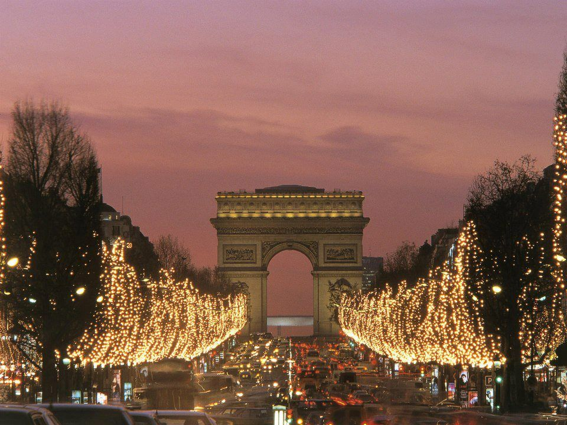

Paris
Paris takes on a different rhythm in the final weeks of the year. Begin beneath the lights of the Champs-Élysées, cross the Seine as evening settles over the city, then make the Opéra the occasion. Puccini’s Turandot, one of opera’s great dramatic works, is performed at the Opéra Bastille from 27 November to 27 December 2026, while Pulsations, an evening of contemporary ballet, takes over the Palais Garnier from 4 December 2026 to 2 January 2027. Between Christmas and New Year, Paris offers evenings where the city and the performance seem to belong together.



London

In London, Christmas belongs to the evening. Walk beneath the lights of Bond Street and Regent Street before making your way to the Royal Opera House, where The Royal Ballet’s The Nutcracker returns from 3 December 2026 to 13 January 2027. The classic Christmas ballet, set to Tchaikovsky’s celebrated score, has become one of London’s great festive traditions. Afterwards, the evening can continue over dinner in Mayfair while the city remains illuminated outside.


New York
Few cities embrace the final days of the year quite like New York. See the Rockefeller Center Christmas Tree above the ice, walk Fifth Avenue beneath its festive lights, then head to Lincoln Center. Mozart’s The Magic Flute, a fantastical opera presented in its family-friendly holiday production, returns to the Metropolitan Opera from 11 December 2026 to 2 January 2027. On 31 December 2026, the Met also premieres a new production of Puccini’s La Fanciulla del West, an opera set during the California Gold Rush, as part of its New Year’s Eve gala.


Whether it is Christmas in London, the final days of the year in Paris, or New Year’s Eve in New York, we can shape the stay around the city and the moments you want to experience.
And if winter is calling you somewhere else, we can take care of that too.
Meet winter somewhere new ⟶